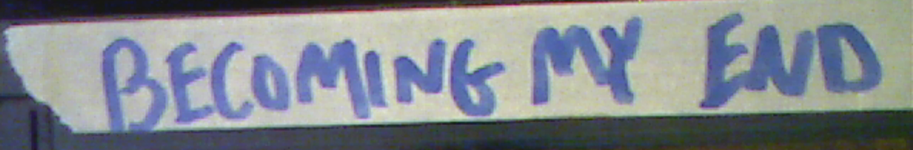
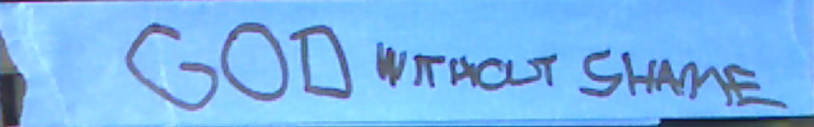

KayıpKasetler.0021
'Zihin Gördüğünü Artık Göremez Olamaz.'
Locke'un Aşkınlığı - 2004, 3 saat 10 dakika
İkinci Dünya Savaşı sırasında taraf değiştirip Nazilere katılan Amerikalı bilim insanı Peter Locke hakkındaki yasaklı belgesel. Yoğun Nazi propagandasınedeniyle dünya çapında yasaklandı. Özel bir koleksiyondan edinildi.

93 Aile Buluşması - 1993, 10 dakika
Bir çocuğun anne ve babasını öldürürken kendisini çektiği el kamerası kaydı. Kimliği bilinmeyen bir bağışçı tarafından terk edilmiş bir evin tavan arasında bulundu. Çok gerçekçi görünüyor ama böyle bir suçla ilgili hiçbir kayıt hiçbir yerde bulunamıyor.
Nükleer Kışın Eşitliği - 1982, 1 saat 35 dakika
Soğuk Savaş'ın dünya çapında nükleer felaketle sonuçlandığı spekülatif kurgu filmi. Özellikle felaket sonrasında acı çeken ABD'nin gerçek ve güçlü isimlerine odaklanıyor.

Hiçbir Canavarı Esirgeme - 1975, 1 saat 3 dakika
Vietnam'da gerçekten kaydedilmiş savaş vahşetlerini yücelten rahatsız edici görüntüler, uzaylı istilasınıanlatan kurgusal bir öyküyle birbirine bağlanıyor. Aşırı ırkçılık ve gerçek şiddet görüntüleri nedeniyle yayımlanmadı.

Düşlerin İmparatoru - 1998, 2 saat 1 dakika
Hipnoz ve uyuşturucu kullanarak kendi tarikatını nasıl kuracağını adım adım anlatan “kurgusal” eğitim videosu. Gösterilen yöntemler kanıtlanmış tekniklerdir ve suç teşkil eden eylemler içerir.

Kendi Sonuma Dönüşmek - 1993, 2 saat 17 dakika
Adı bilinmeyen bir sanatçının kameranın önünde kendisini yavaşça zehirleyerek öldürdüğü kayıt. Ölümlülüğün “keşfedilmemiş alanında” bir başyapıt yaratmak amacıyla bir ay boyunca kendini çekti.

Şehvetin Kusursuzluğu - 2020, 1 saat 48 dakika
Travmatik göz sakatlamaları içeren aşırı vücut değiştirme işlemlerini eksiksiz ve tüm açıklığıyla gösteren belgesel.

Utanmaz Tanrı - 1963, 2 saat 40 dakika
Ölüme yakın bir deneyimden bir melek tarafından kurtarıldıktan sonra İsa'nın güçlerini kazanan küçük kasaba vaizini anlatan, yayımlanmamış kurgusal destan. Hristiyanlık karşıtı söylemleri nedeniyle uluslararası dinî gruplarca, ayrıca başrol oyuncusuna yöneltilen ilgisiz teşhircilik suçlamaları yüzünden yasaklandı.

Gerçek Asiller - 1997, 3 saat 45 dakika
Yasaklanmış ve yok edildiğisanılan, bir Avrupa kraliyet ailesinin perde arkasını; yasa dışı ritüelleri ve uyuşturucu kullanımını da içeren paparazzi görüntüleri. Eserin asıl yaratıcısı gizemli biçimde ortadan kayboldu.

Kıkırdayan - 2006, 1 saat 43 dakika
Bir diş hekiminin yoğunlaştırılmış gülme gazıyla hastalarını etkisiz hâle getirip çaresizce gülerlerken onlara işkence ettiği yasaklı korku filmi. Çekimler bittikten sonra oyuncular, yönetmenin “gerçek fiziksel şiddet kullanan metot yönetmenliği” hakkında saldırı ve darp suçlamasında bulununca film yasaklandı.